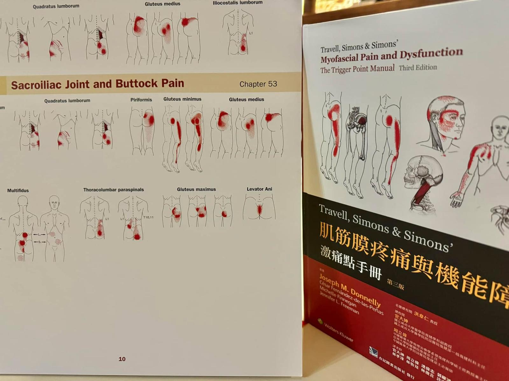

「終於有醫生聽得懂我在說什麼了⋯」
「終於有醫生聽得懂我在說什麼了⋯」
#肌筋膜疼痛症候群MyofascialPainSyndrome
肌筋膜疼痛症候，經常潛在日常的各種急、慢性疼痛中，但卻時常在診間裡被忽略！
從宜蘭來的患者，受此困擾已4-5年，起初只是下背痛、薦髂關節痛，最後連輕度lumbar HIVD也開刀了、各種西醫消炎止痛復健、仿間中醫針灸針刀都嘗試過了，依然痛到無語問蒼天。
當然也有上網對自己的病痛找尋相關資訊與詢問醫療專業人員，患者說：「竟然沒有人聽的懂我在講什麼⋯」、「我已經痛到腰臀往大腿小腿走，輕輕碰都好痛」。
被忽略的慢性疼痛會引發大腦神經對疼痛的中樞敏感化，即便輕微的觸碰按壓，在痛覺回饋上都會是幾千倍的放大，把脈後透過肌筋膜乾針治療截斷負向回饋循環，同時透過中醫中藥的專業，針對其當前身體狀態開藥處方，物理性化學性醫療手段雙管齊下，相信積極治療幾次後一定能大幅改善！
中醫師 黃彥鈞
太初中醫診所
